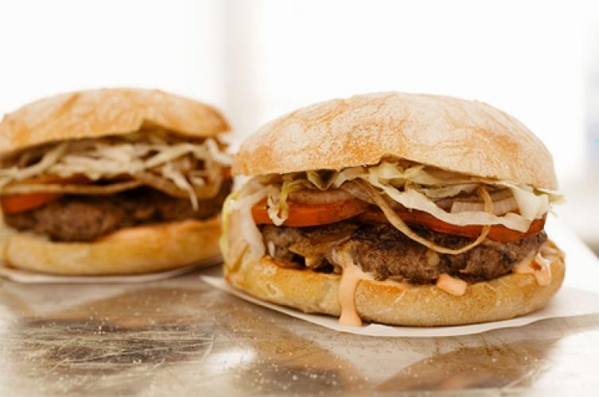

Beef contains a number of nutrients including zinc,B12 and iron. B12 and iron. High concentration of protein in beef means your muscles will be strong and healthy. Eating beef also makes you feel full. Bell peppers are low in calories and provide you with vitamins A and C. These vitamins are necessary to strengthen your immune system. Eating bell peppers also provides you with many antioxidants.